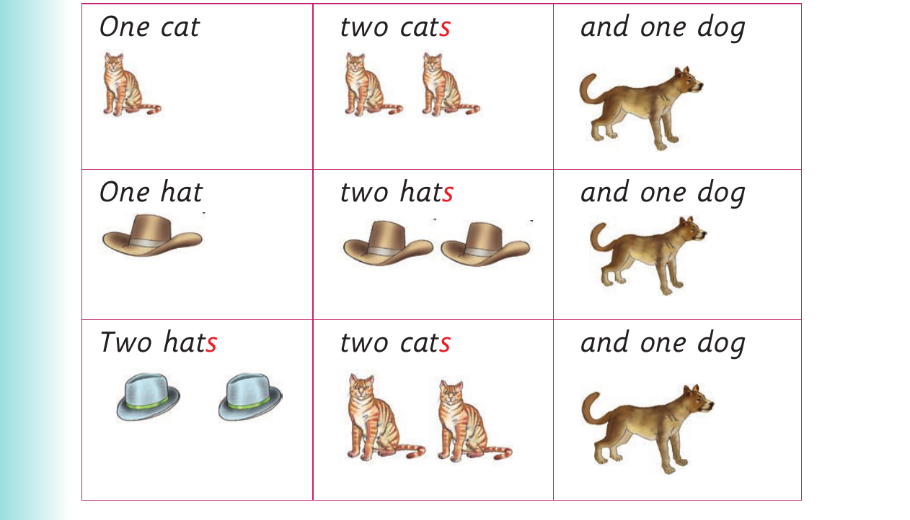

For Questions about quantities and a song, panel 1 of 2 shows this reviewed visual content: Picture questions show a house and a classroom so learners can count windows and pupils, followed by the beginning of a singular-and-plural song table. The printed labels and instructions include: Pictures Questions and answers How many windows does the house have? (c) The house has ________. How many pupils are there in the classroom? There are ___________. (d)
Pictures Questions and answers
How many windows does
the house have?
(c)
The house has ________.
How many pupils are there
in the classroom?
There are ___________.
(d)
5. Sing the following song:

For Questions about quantities and a song, panel 2 of 2 shows this reviewed visual content: Picture questions show a house and a classroom so learners can count windows and pupils, followed by the beginning of a singular-and-plural song table. The printed labels and instructions include: One cat two cat s and one dog One hat two hat s and one dog Two hat s two cat s and one dog
One cat two cat s and one dog
One hat two hat s and one dog
Two hat s two cat s and one dog